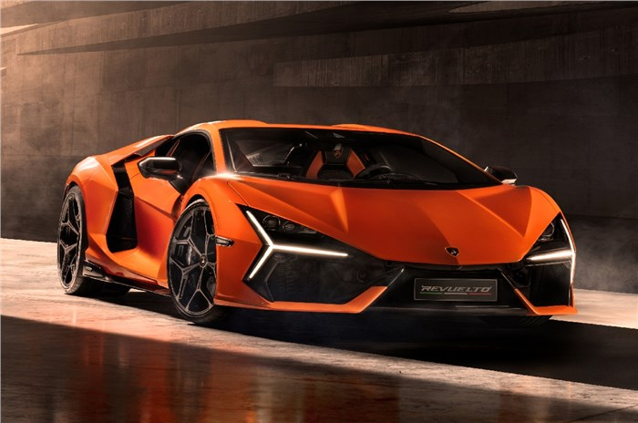
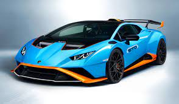
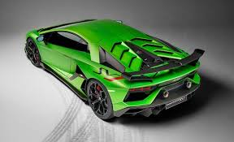

Streamlined Design



Lamborghini is an Italian luxury sports car manufacturer founded by Ferruccio Lamborghini in 1963. The company is known for producing high-performance, exotic cars that are often recognized for their sleek designs and powerful engines.
Lamborghini's commitment to cutting-edge aerodynamic design stands as a testament to the brand's pursuit of automotive perfection. Each Lamborghini model showcases a carefully crafted symphony of curves, angles, and contours, meticulously engineered to optimize airflow and enhance performance. The sleek, aerodynamic lines not only contribute to the visual allure of these supercars but also play a crucial role in achieving optimal speed, stability, and handling. From the iconic hexagonal shapes to the sharp, angular cuts, Lamborghini's design philosophy seamlessly marries form and function. Precision-engineered spoilers, diffusers, and active aerodynamics further underscore the brand's dedication to harnessing the power of the wind to maximize both speed and efficiency. Whether slicing through the air on the open road or dominating the racetrack, Lamborghini's aerodynamic prowess ensures that every model not only captivates the eyes but also slices through the air with unparalleled grace and performance.